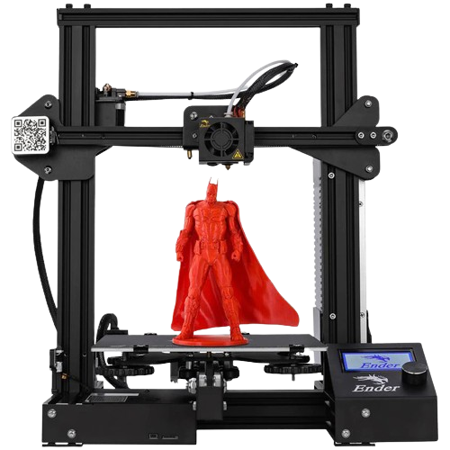

Un multimetru este un instrument de măsurare care poate măsura mai multe proprietăți
electrice. Un
multimetru
tipic poate măsura tensiunea, rezistența(d) și curentul, caz în care este cunoscut și sub denumirea de
volt-ohm-miliamperetru (VOM), deoarece unitatea este echipată cu funcționalitate de voltmetru, ampermetru și
ohmmetru. Unele oferă măsurarea proprietăți suplimentare, cum ar fi temperatura și volumul.
Multimetrele analogice folosesc un microampermetru cu un indicator mobil pentru a afișa rezultatele.
Multimetrele digitale au afișaje numerice și au depășit multimetrele analogice, deoarece sunt mai ieftine,
mai precise și
mai robuste din punct de vedere fizic decât multimetrele analogice.
Cum functioneaza
Multimetru Digital
Multimetru Analog
Display Digital: Multimetrele digitale utilizează un ecran digital pentru a afișa valorile
măsurate. Acestea pot afișa, de obicei, și alte informații, cum ar fi polaritatea și unitatea de
măsură.
Indicatorul Analog: Multimetrele analogice folosesc un indicator analog (un ac sau o sârmă
bobinată) care se mișcă pe un cadran pentru a indica valoarea măsurată.
Selectarea Funcției și Gama: Similar cu multimetrele analogice, trebuie să selectați funcția
dorită și gama corectă pentru măsurare, de obicei, folosind un selector rotativ sau butoane.
Scala și Selectarea Funcției: Are scală și este necesar să selectați gama adecvată pentru
măsurarea dorită, de obicei, prin rotirea unui selector de gamă.
Conexiunea la Circuit: Multimetrul este conectat la circuit sau componenta pentru a efectua
măsurarea. Procedura este similară cu cea a multimetrului analog.
Conexiunea la Circuit: Multimetrul se conectează la circuitul sau componenta pe care doriți să o
măsurați. Pentru a măsura tensiunea, de exemplu, unul dintre capetele multimetrului este
conectat la terminalul pozitiv al sursei, iar celălalt capăt la terminalul negativ.
Citirea Valorii: Citirea valorii se face direct de pe ecranul digital. Valorile sunt afișate ca
numere exacte sau aproximative, în funcție de rezoluția multimetrului.
Citirea Valorii: După ce s-a stabilit conexiunea și gama corectă, citiți valoarea măsurată de pe
indicatorul analog, unde acul arată pe scala corespunzătoare.
Precizia și Capacitățile Suplimentare: Multimetrele digitale sunt mai precise și pot oferi
capacități suplimentare, cum ar fi măsurarea frecvenței, testarea diodelor, continuitatea
circuitului și alte funcții avansate.
Erori și Precizie: Multimetrele analogice sunt afectate de erori și potențial de paralaxă
(eroare de citire din cauza unghiului de observație al utilizatorului), ceea ce poate influența
precizia măsurătorilor.
Osciloscop
Un osciloscop este utilizat pentru a vizualiza semnalele electrice în funcție de timp,
permițând analiza formei de undă, frecvenței, amplitudinii și alte caracteristici ale semnalului.
Este folosit pentru a testa și a depana circuite electronice, a analiza semnale de la
senzori, motoare sau alte componente.
Sursă de Alimentare Reglabila
O sursă de alimentare reglabilă furnizează tensiune și curent stabilizat, cu
posibilitatea de a regla parametrii în funcție de necesități.
Este folosită pentru alimentarea și testarea componentelor electrice și electronice
ale roboților, precum motoarele, senzorii și circuitele de control.
Logic Analyzer
Un analizor logic este folosit pentru a captura și a analiza semnale digitale
complexe, precum comunicațiile seriale, starea pinilor și interacțiunile între
componente. Este folosit pentru depanarea și analiza comunicațiilor între
microcontrolere, senzori și alte componente digitale ale roboților.
Statie de lipit
O stație de lipit este folosită pentru a conecta componente electronice între ele
prin sudură, creând conexiuni permanente între conductori.
Stațiile de lipit sunt compuse dintr-un fier de lipit (pistol de lipit) și o
bază care conține un element de încălzire și un control al temperaturii. Acestea sunt utilizate pentru
lipirea componentelor electronice pe plăci de circuit, pentru reparații sau construcția de prototipuri.

Imprimanta 3D
O imprimantă 3D este utilizată pentru a produce obiecte tridimensionale din materiale precum plastic,
metal sau ceramică, prin depunerea succesivă a materialului în straturi sub control computerizat.
Imprimantele 3D sunt compuse dintr-un cadru, o platformă de construcție, un sistem de extrudare (pentru
depunerea materialului), și un sistem de control care interpretează modelele digitale și controlează
mișcarea imprimantei. Acestea sunt folosite în robotică pentru a crea carcase de roboți, componente
personalizate, piese de reparații sau prototipuri ale proiectelor


.png)